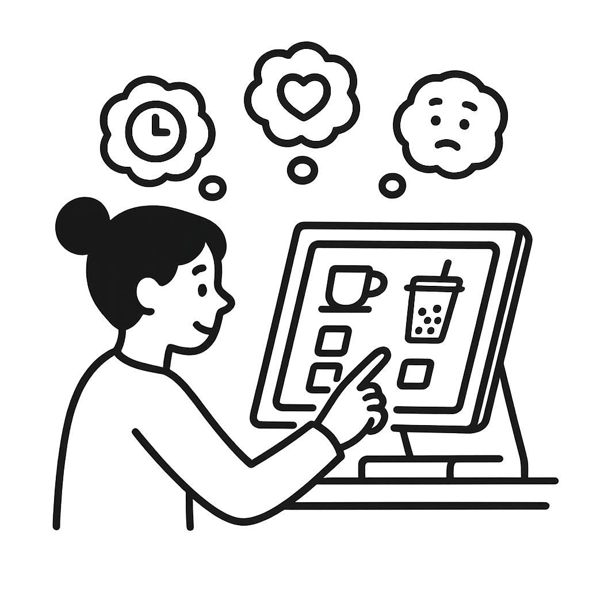
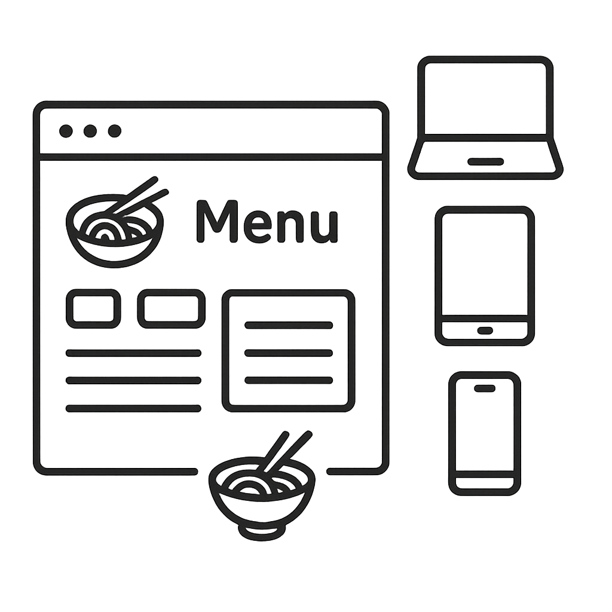
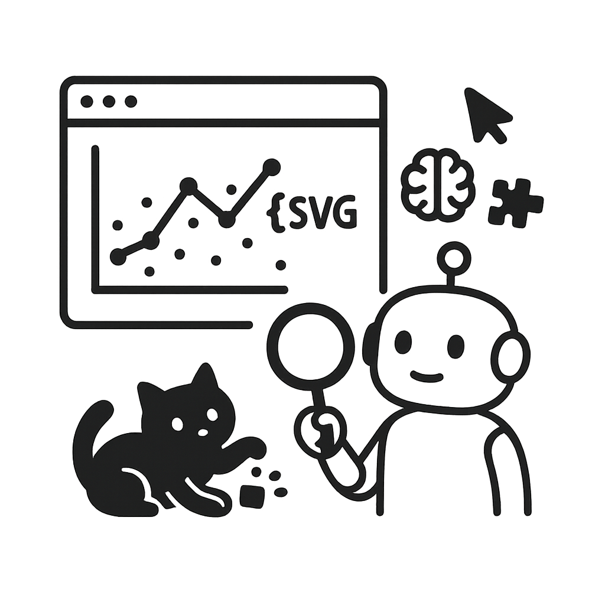
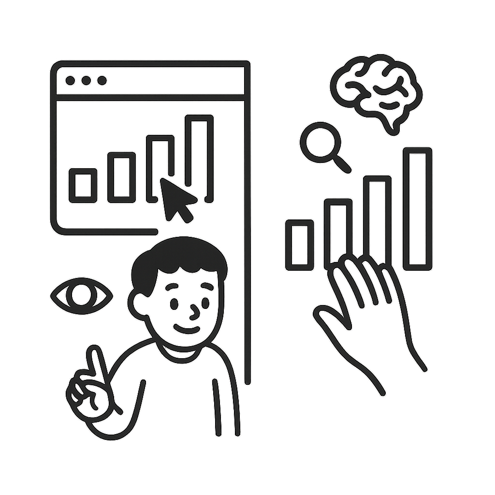

Radio Buttons Redesign
A case study examining YouTube's video quality selector and proposing accessibility improvements.
View Project →I love
I am a second-year computer science master's student at Brown University.
Currently, I am working under Dr. Jeff Huang at Brown HCI Lab. We are exploring the effect of visualizations on people's self-reflection over their personal text data.
To pronounce my name, think of it like "John Jane Shoe". In my free time, I like being a barista and photographer.
Get in TouchA case study examining YouTube's video quality selector and proposing accessibility improvements.
View Project →
Developing user understanding through observation, interviews, personas, and storyboards for Ten One Boba Shop.
View Project →
Improving the accessibility and user experience of a local Thai restaurant's website.
View Project →Developing a note-taking chrome extension that uses LLMs to automatically generate notes from user's learning journey.
View Project →
Data visualizations help extract insights from datasets, but reaching these insights requires decomposing high level goals into low-level analytic tasks that can be complex due to varying degrees of data literacy and visualization experience. This research explores how large language models can perform visual analytic tasks directly on SVG-based visualizations.

This research explores the effectiveness of tactile data encodings using swell paper compared to visual encodings displayed with SVGs for data perception tasks. The study establishes a novel tactile encoding hierarchy and provides empirical evidence for the perceptual accuracy of tactile encodings.
Feel free to reach out if you'd like to collaborate or just say hello!